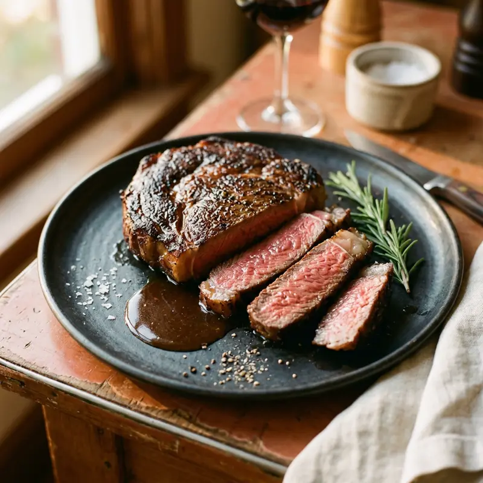

대만은 저렴한 철판 스테이크(平價牛排) 문화가 발달해, 수프·샐러드바·아이스크림까지 포함된 세트를 부담 없는 가격에 즐길 수 있는 곳이 많습니다. 물론 고급 스테이크하우스도 별도로 잘 발달해 있어요.
무엇이 특별할까요?
01
저가 철판 스테이크
저가 체인 철판 스테이크는 샐러드바·수프·음료가 무제한인 경우가 많아 가성비가 좋아요.
02
굽기 정도
웰던 위주 문화라 미디엄레어를 원하면 주문 시 명확히 말해야 해요.
03
철판 화상 주의
뜨거운 철판 위에 바로 나오니 소스가 튈 수 있어 옷차림에 유의하세요.
이렇게 즐겨보세요
- ✓저가 체인은 세트 메뉴(수프+샐러드바+메인)로 주문하는 게 이득
- ✓굽기 정도는 명확한 단어로 정확히 요청하기
- ✓고급 스테이크하우스는 주말 예약 필수
- ✓철판 요리는 뜨거우니 아이 동반 시 주의
Real spots
전체 화면 지도로 보기 →
여행자들이 등록한 진짜 맛집
이 카테고리에 실제로 등록된 맛집을 지역별로 모아봤어요. 새로 등록되면 여기에도 바로 반영돼요. 핀을 눌러 추천 투표도 남길 수 있어요.
📍타이중
📍이란
Join the map
지금 등록하기 →
나만의 맛집을 공유해주세요 🤫
여러분의 발견이 다른 여행자들에게 진짜 대만을 경험하게 해줍니다.